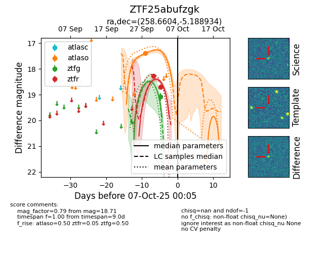
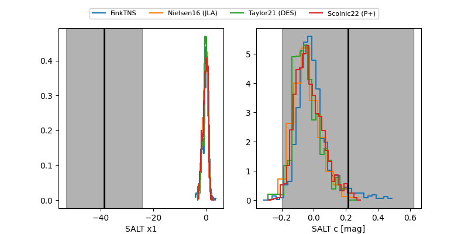

FINK: ZTF25abufzgk
Lasair: ZTF25abufzgk
ALeRCE: ZTF25abufzgk
ZTF25abufzgk (ztf,fink)
equatorial (ra, dec) = (258.6604,-5.18893)
galactic (l, b) = (16.5736,+18.78869)


last atlaso=17.40, ztfg=19.08, ztfr=18.71
1 atlaso, 1 ztfg, 2 ztfr detections